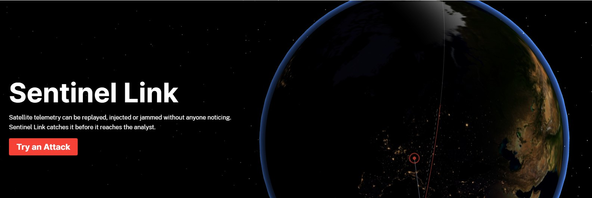
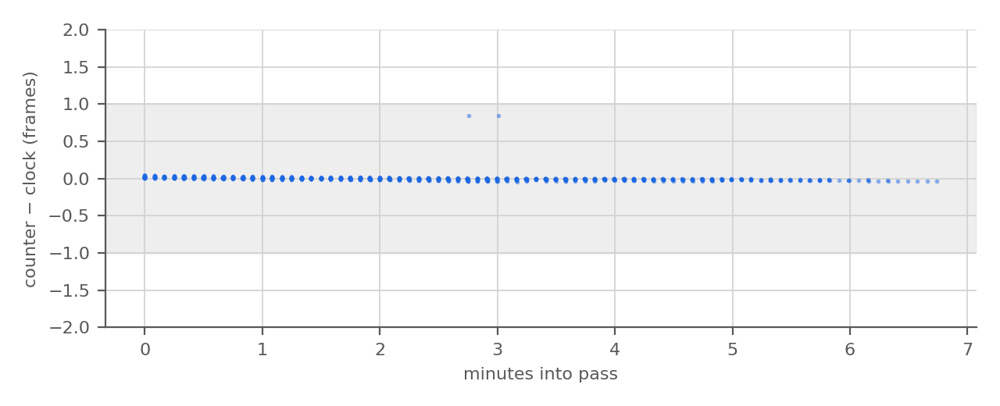
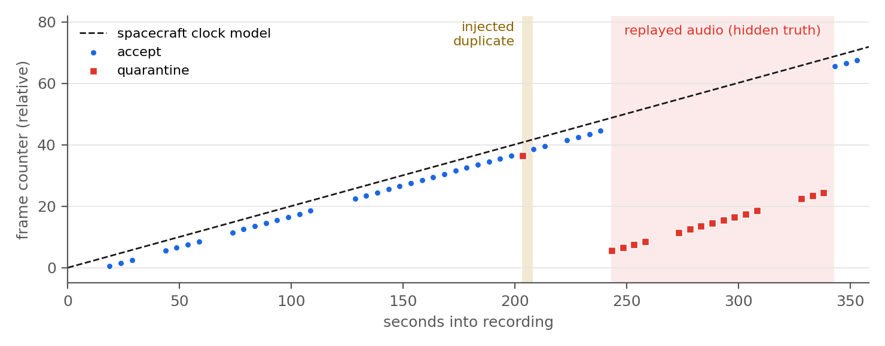
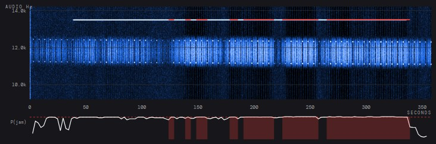
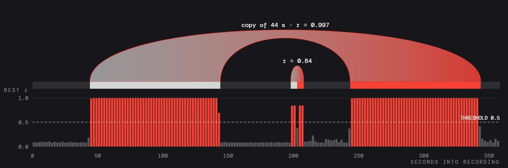
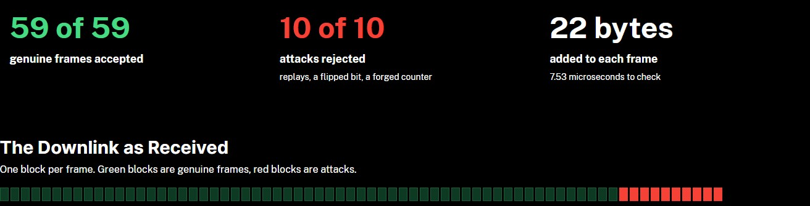
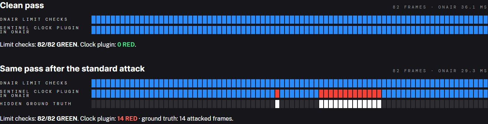
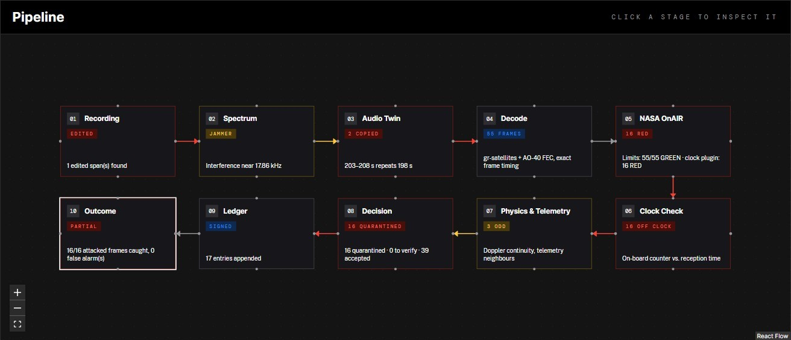

Track 1 asks whether a stored signal, or a sequence decoded from it, can be authenticated. Amateur and Earth-observation cubesats transmit without link-layer authentication, so a replayed frame is bit-for-bit genuine and passes every CRC and FEC check. SENTINEL-LINK works in three layers. On links we control, frames carry CCSDS SDLS authentication that is byte-compatible with NASA CryptoLib. Recordings made by our station are signed at capture, one Merkle leaf per second of audio. For legacy downlinks, five detectors read evidence that is hard to fake (the spacecraft's own clock, the Doppler curve, telemetry continuity, the spectrum and the receiver noise itself), and a calibrated fusion turns it into a decision that is written to a signed hash chain.
All figures are measured on 17 held-out SatNOGS recordings, from later dates and stations not seen in training. Thresholds were fixed before the held-out run.
We protect the space-to-ground segment and the archive behind it: RF downlink, receiver, demodulator, recording archive, frame decoder, telemetry and product pipeline, analyst. The reference system is the SatNOGS network receiving FUNcube-1 / AO-73 (NORAD 39444), 1200 Bd DBPSK telemetry with no link-layer authentication. The same analysis applies to any cubesat downlink in that position.
Downlinked housekeeping decides whether a payload is considered healthy, frame timing places each measurement on the orbit, and archives are re-processed into products used for agriculture, insurance, water management and disaster response. A corrupted stretch that still decodes does not stop that pipeline. It flows on as plausible data, so the defence has to work on data that looks correct.
One recording goes in. Out come a decision with reason codes for every frame, an interference report with the alarm frequency, a duplicate-audio report, the list of frames the spacecraft clock says were sent but were not received, and the ledger entries that record it all. Checks that need no decoder run on the raw audio, so they still work when the decoder recovers nothing.
We use 30 AO-73 observations from the SatNOGS Network, recorded by five stations on three continents between 29 September and 22 October 2026. Each one comes with its audio, the station's own decoded frames, the TLE and the station position, and every file is pinned by its SHA-256.
Training uses the 13 observations made before 15 October by stations seen more than once. The other 17, later or from unseen stations, are held out, and every reported number comes from them, with three attack seeds per recording.
The frame heads and the fusion take 2.4 ms per frame. The interference head takes about 14 s per recording and the duplicate-audio head about 5 s, both on the raw audio. Signing or verifying a capture manifest takes 0.16 to 0.28 s, NASA OnAIR 29 to 36 ms per pass, and SDLS verification 7.1 µs per frame.
Attacks are applied to the audio, and then the whole chain runs again: demodulation, decoding, every head and the fusion. Labels come from the attack plan, so a frame counts as caught only if the decoder recovered it and the fusion flagged it.
Replay length is drawn from 5 to 20 frames. The jammer type is drawn from CW, narrowband noise, swept and pulsed, and its strength from −30 to +10 dB relative to the signal, all hidden from the detector.
A jammer counts as detected only when an alarm overlaps it in time and lies within 100 Hz of its frequency, plus half its bandwidth for noise and sweeps. Rates carry 95 % Wilson intervals.
Carrier. NRZ BPSK shows two lobes at fc ± baud/2. On a Welch PSD we pick the fc that maximises the smaller of the two lobe excesses, so a jammer beside one lobe cannot pull the estimate.
Demodulation. The gr-satellites FUNcube-1 flowgraph (AGC, band-edge FLL, polyphase clock recovery, differential detection) runs once, and we read back its symbol stream, FLL frequency and AGC level.
Per-block FEC with timing. gr-satellites stamps frames with wall-clock time, which means nothing for an archived file. We search the 65-bit distributed syncword in the hard symbols and decode each 5,200-symbol block on its own (de-interleave, Viterbi r=½ k=7, descrambler, two RS(160,128)), so every frame is tied to its sync symbol and to its exact time in the recording.
Each AO-73 frame carries a type cycling from 0 to 23 and a 24-bit counter that increments once per 24-frame set,
so P = 24·seq + type advances exactly once per transmitted frame. A robust linear fit
P = a + b·t on the training passes gives an on-board frame period of 4.9885 s; the oscillator
runs about 0.23 % fast against the nominal 5 s.


COUNTER_BEHIND_CLOCK (a replay) or COUNTER_AHEAD_OF_CLOCK (a forged counter or an audio dropout).DUPLICATE_COUNTER; a counter lower than the previous frame's raises COUNTER_REGRESSION.COUNTER_TIME_MISMATCH above two frames, which points to an injected or removed frame.PASS_FROM_ANOTHER_TIME. All 16 held-out replays of another day's pass were caught.Replayed audio carries the Doppler and level of the moment it was recorded. At every frame boundary we measure the step of the median carrier and level over 0.4 to 2.9 s on each side, scaled by the track's own MAD of first differences, plus each frame's offset from a robust cubic fit of the whole-pass Doppler curve.
Twelve housekeeping channels (photovoltages, battery voltage and temperature, currents, reboot and error counters) are compared with the median of the four neighbouring frames on each side, scaled by per-channel noise learned on clean passes, and scored with PyOD's ECOD. This is the evidence left against an attacker who rewrites the counter of a frame taken from elsewhere.
Per 5 s window, from a 4,096-point STFT: prominence over a running-median baseline, spectral kurtosis (−1 for a constant-envelope tone, 0 for noise), persistence, −3 dB width, imbalance between the two BPSK lines and in-band excess, plus 30 s context features. A histogram gradient-boosting classifier with isotonic calibration scores each window, and the threshold is set on separate clean calibration recordings. The response notches tone-like interferers and band-stops wider ones, then decodes again.

A genuine recording never contains the same stretch of thermal noise twice, while audio replayed inside a file is a sample-for-sample copy, noise included. The head mixes the downlink band to a 1 kHz complex baseband, whitens it with the file's own long-term spectrum, and cross-correlates 2 s blocks against the whole file by FFT. Whitening is one fixed filter, so copies stay copies, but a CW jammer or a station birdie no longer makes distant blocks look alike. Blocks that match at the same lag form one segment, and the later copy is reported. The threshold, a normalised correlation of 0.5, was fixed before the benchmark.

On the held-out recordings it found all 48 in-pass replays and all 22 duplicated slots, and matched none of the 30 clean files (highest genuine correlation 0.27, lowest real copy 0.69). Copies survive Vorbis re-encoding and added noise; a 100 ppm time-stretch defeats it (2 of 16 found), and the clock head still catches those frames.
Fusion. A logistic regression on 11 log-scaled evidence inputs, trained without class re-weighting, gives a calibrated probability (calibration error 0.023). Below 0.5 a frame is accepted, from 0.5 held for verification, from 0.9 quarantined, and every non-accepted frame is logged with its reason codes.
| Test on real AO-73 frames | CryptoLib | Ours |
|---|---|---|
| Protected output compared | byte-identical, 6 of 6 frames | |
| Our frames, verified by CryptoLib | 6/6 accepted | |
| CryptoLib frames, verified by us | 6/6 accepted | |
| Telemetry bit flipped, CRC fixed | rejected | rejected |
| Valid frame replayed | accepted | rejected |
Over 2,085 frames, both services accepted every fresh frame and rejected every replay and bit-flip. Keys come from an HKDF key store that stands in for an HSM.

At capture the station hashes each second of audio into a Merkle tree and signs the root, together with the capture context, with Ed25519. Verification recomputes the leaves of the file as received: the signature proves the manifest is genuine, and the leaves that no longer match show where the audio changed.
Every run and every non-accepted frame is appended to a SHA-256 hash chain with a signed checkpoint every 32 entries. In production the chain is a PostgreSQL table that refuses updates and deletes, written in the same transaction as the run.
Every decoded pass is streamed through NASA OnAIR, the GSFC On-board AI Research platform shipped in NOS3. OnAIR's own agent and telemetry test suite check each frame against feasibility limits learned from the training passes, and a plugin we wrote for OnAIR checks the frame counter against the spacecraft clock.

| Held-out benchmark, 17 recordings, 3 seeds each | Result | Notes |
|---|---|---|
| Replay and sequence-anomaly frames detected | 99.3 % (581/585) | CI 98.3 to 99.7 %; replay 100 %, anomaly 93.3 % per frame |
| Events: standard replay, anomaly, other-pass replay | 44/44, 41/41, 16/16 | an event counts if any of its frames is flagged |
| Genuine frames flagged, all passes | 0.71 % | CI 0.45 to 1.10 %; clean passes alone 0.29 % (2/695) |
| Frame ROC-AUC and calibration error | 0.9996, 0.023 | the probability is calibrated, not only ranked |
| Forged counter, one frame ahead or far off | 88 %, 100 % | informed attacker, 17 cases each |
| Content forged with a consistent counter | 64.7 % | only telemetry and splice evidence remain |
| Jammer detected at its frequency, hidden strength | 54.2 % (26/48) | CI 40.3 to 67.4 %; median frequency error 3.7 Hz |
| Clean recordings with any interference alarm | 7/17 | window false-alarm rate 0.88 % |
| Decision latency per frame, peak memory | 2.41 ms, 43.8 MB | p95 7.0 ms, after decoding, laptop CPU |
An earlier version counted a jammer as detected whenever any alarm overlapped it in time. That gave 77.1 %, but 11 of those alarms pointed 465 Hz to 13 kHz away from the jammer, and with 7 of 17 clean recordings raising some alarm the measure mostly counted false alarms. We report the frequency-matched 54.2 % instead.
A rule requiring two consecutive alarm windows would cut clean recordings with an alarm from 7 of 17 to 2 of 17, at a cost of 3 of 48 jammers. It lost more than the 5-point budget we set in advance on the calibration recordings, so it is reported and not adopted. Choosing it from the held-out results would be tuning on the test set.

The analysis API and the web console run as two containers on one laptop-class machine, with PostgreSQL as a third in production. It stores the ledger, every run and every frame decision with its evidence. The ledger table refuses updates and deletes, a run and its ledger entries commit in one transaction, and the API runs as a role that can only read and insert. Audio stays in files or object storage, referenced by SHA-256. Without a database the same system runs on files, which is how the benchmark is reproduced. A blind mode analyses any uploaded recording with no metadata and reads the absolute time back from the spacecraft clock.
| Requirement | Where it is met |
|---|---|
| SatNOGS recordings or telemetry | 30 recordings, 5 stations; frame files too |
| Authenticate a command or telemetry sequence | SDLS link, byte-identical to NASA CryptoLib (section 5) |
| Authenticate a stored signal | Signed per-second Merkle manifest (section 5) |
| Detect replay, injection and interference | Five heads and calibrated fusion (sections 3, 4 and 6) |
| Calibrated confidence, rates, latency, overhead | Sections 4, 5 and 6 |
| A held-out recording supplied for evaluation | Blind analysis in the console and from the command line |
| Official tools | SatNOGS, gr-satellites, NASA OnAIR and CryptoLib, PyOD |